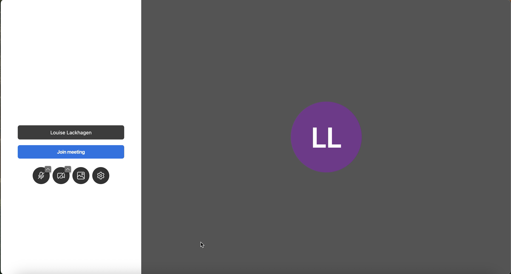

Video Meeting Platform
Challenge
The team was tasked with creating a video meeting platform integrated into existing products. Users needed a seamless way to hold meetings without leaving the platform, while keeping security and usability top of mind.
The challenge was to design an interface that was intuitive, cohesive, and unique enough to compete with existing video tools, encouraging users to stay within the platform rather than switch to competitors.
My Role
I contributed as UX Designer with ownership of important parts of the platform experience. I drove interaction and prototyping work for selected areas, was responsible for usability testing, and facilitated continuous dialogue with stakeholders to iteratively improve clarity and ease of use.
Process
Defining Goals & Pain Points: Conducted focus groups with the CEO, customer service, and users to identify essential features and pain points.
Evaluating Platform Options: Investigated existing video platforms and open-source solutions to determine the best foundation that could accommodate all required features.
Design & Redesign: Customized the chosen platform’s interface to match the product’s visual style and ensure a seamless user experience.
User-Centered Adaptation: We made targeted changes to the integrated video platform so it better matched our users’ needs and workflows.
User Testing: Conducted usability tests with target users to validate the design and identify areas for improvement.
Iteration & Refinement: Iterated the design based on feedback, followed by additional user testing to finalize the interface.
Delivery & Impact
The final platform enabled users to conduct meetings directly within the product, eliminating the need for third-party tools.
Unified workflow: Teams could manage tasks, meetings, and information all in one secure platform.
Positive feedback: Users reported that the interface was easy to use and visually consistent with the product.